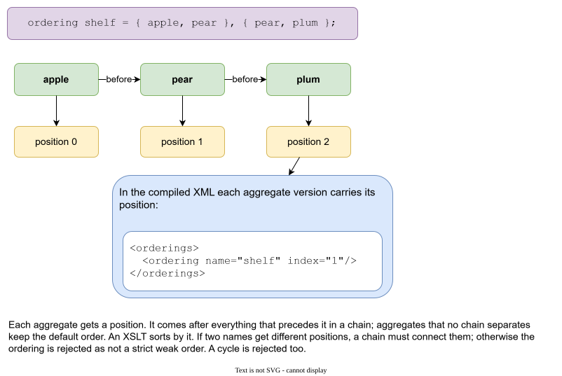

Ordering¶
Files have no order. Aggregates are separate files, found by name. Generated output often needs an order anyway: a type declared before the types that use it, a base item before a derived one, a table before the tables that refer to it.
An ordering says it in the data.
ordering shelf = { apple, pear }, { pear, plum };
An ordering is a statement of the root aggregate. It has a name and one or more parts. A part is a chain: each name comes before the next one.

From chains to positions¶
Galimatron turns the chains into an order of all aggregates, and writes the position of each one, counting from 0. Here apple has nothing before it, so it is at position 0. pear follows apple: position 1. plum follows pear: position 2.
- An aggregate comes after everything that precedes it in a chain.
- Aggregates that the ordering does not separate keep the default order (the order of the files).
- An aggregate that no part names goes after the named ones.
The position is written into the compiled XML. Each aggregate version carries it in an orderings element:
<orderings>
<ordering name="shelf" index="1"/>
</orderings>
Your post XSLT sort by it:
<xsl:for-each select="$items">
<xsl:sort select="xs:integer(orderings/ordering[@name = 'shelf']/@index)" data-type="number"/>
...
</xsl:for-each>
The example with messages does exactly that: its ordering puts an enumeration before the type that uses it, so the generated code is in a valid order.
Your XSLT should decide what to do with an item that no part names. The example gives such an item a very large number, so a version without the ordering stays sorted by name.
What is checked¶
An ordering must be a strict weak order:
- If two names get different positions, a chain must connect them. Otherwise the ordering says "A is before B" with nothing to support it, and Galimatron rejects it and names the pair.
- A cycle (
applebeforepearbeforeapple) is rejected, and the message names it.
Names in an ordering must be aggregates that are present in that version. wizard delete aggregate refuses to remove an aggregate that a version's ordering still names. Remove the name from the ordering first.
Writing an ordering¶
ordering shelf = { apple, pear };
in the root version, or
wizard create ordering shop shelf = { apple, pear };
(shop is the root aggregate here.) A later statement of the same ordering name in a later version replaces the earlier one. An ordering cannot be deleted.
Note
The benchmark rewrites the ordering of its root in every new version, with every aggregate named in it, to measure the cost.